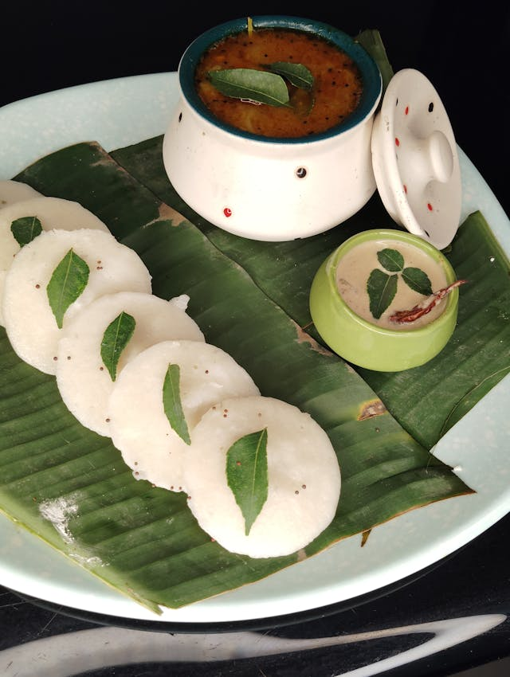

Home
Idli

Description
Idli is a soft and fluffy steamed rice cake made from a fermented batter of rice and urad dal. It's a light,
healthy, and protein-rich breakfast staple in South Indian cuisine, often served with coconut chutney and sambar.
Ingredients
- 1 cup idli rice (or parboiled rice)
- 1/4 cup urad dal (split black gram)
- 1 tbsp poha (flattened rice) or fenugreek seeds (optional, for softness and fermentation)
- Salt to taste
- Water (as needed)
- Oil (to grease idli molds)
Steps
- Soak rice, urad dal, and poha/fenugreek seeds separately in water for 4-6 hours.
- Grind them into a smooth, slightly thick batter using water as needed.
- Combine and ferment the batter overnight (8-12 hours) in a warm place.
- Add salt and gently stir the batter before steaming.
- Grease idli molds and pour in the batter.
- Steam in an idli steamer or pressure cooker (without weight) for 10-12 minutes.
- Cool slightly before unmolding. Serve hot with chutney or sambar.